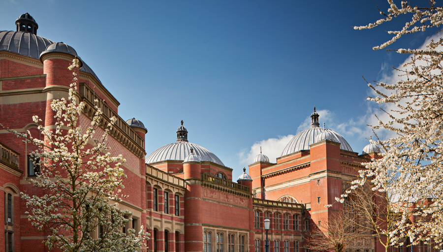

My Second Year at the University of Birmingham...

Looking forward to my placement year at PwC...

My name is Georgina Cottrell and I am a Technology Degree Apprentice studying Computer Science at the University of Birmingham. I have just finished my second year and I am now looking forward to my placement year which starts in September. As a Technology Degree Apprentice I am able to complete my degree at the same time as collecting valuable work experience at PwC (PriceWaterhouseCooper). Throughout my degree I have learnt valuable skills in many of my modules, including, programming, leadership and communication skills. I have created this website as a part of my Bridging Coursework, and for this I have explained further into what I have learnt and what I look forward to learn in multiple blog posts which can be viewed from the navigation bar.